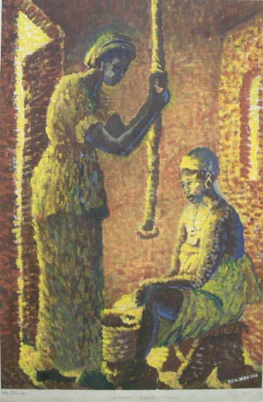

Benjamin Menyah
B. 1944
Artist Biography
Benjamin Menyah was born in Apewosika on Ghana’s Cape Coast. He trained as a teacher at St Mary’s Training College in Apowa from 1962-66 and in the the mid-1970s he joined Winneba Specialist Training College as an art tutor. He became head of painting there and in 1992 joined University College of Education, Winneba where he taught art for the rest of his career. An art educator and an artist, in 2000 Menyah became a member of the Pan African Circle of Artists (PACA) and he was also a fellow of the Goethe Institute in Accra and the co-ordinator for Ghana for the Paris-based Foundation Afrique en Creation. His paintings were mainly of local people and scenes, using oils in a pointillist style. Menyah had numerous exhibitions in Ghana and his paintings were also shown internationally in mixed shows in Nigeria in 1977, United States in 1982 and Germany in 1986. His work is held in many Ghanaian public collections as well as by the Commonwealth Institute in London and Galeria de Art in Madrid.

Kitchen scene- Ghana, 1970